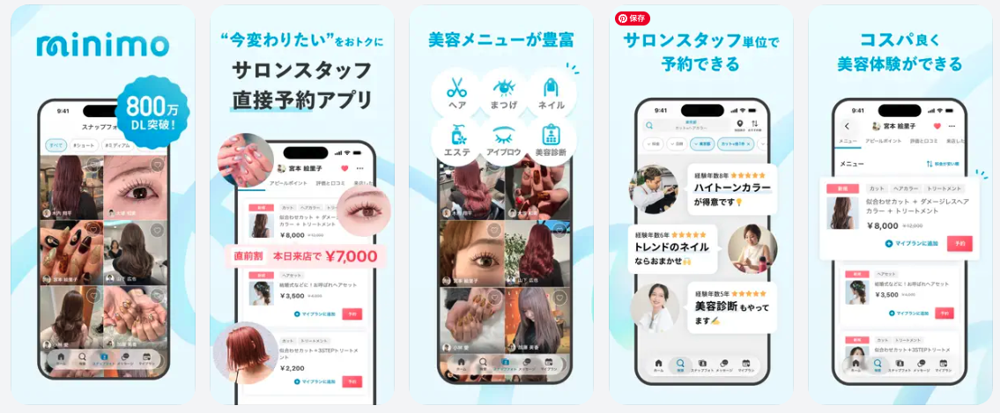

Liquid Glass対応
画面ごとの個別対応ではなく、OSアップデートに継続して対応できる「UI適用基準」をつくる
iOS 26で導入されたLiquid Glassに対し、美容サロン予約サービスのアプリ全体をどう追従させるかを設計
対応内容を構造化し、個別画面の判断より先に「どう判断するか」という基準を設計
- 期間：2025年12月〜2026年8月
- 役割：UIデザイン、PM
- プロダクト：美容サロン予約サービス
一般利用者向け／施術者向けアプリ
- 成果物：UI適用基準／確定方針ドキュメント／コンポーネント単位の確認データベース
判断できる状態にするための課題
01SwiftUIとUIKitが混在し、OS標準に寄せるのかカスタムを維持するのかの判断軸が不明確
02期待値が言語化されておらず、エンジニアが「何を」「どう直すか」を特定できない状態だった
最初にやったこと
個別のUIを直し始めるのではなく、散在していた情報を確定事項として構造化し、プロジェクト全体で同じ判断ができる土台をつくりました。
「整理 → 基準化 → 検証 → 判断」の順で進める
01 / STRUCTURE
曖昧なタスクを構造化
確定方針ドキュメントとコンポーネント単位のDBへ整理
02 / CRITERIA
UI適用基準を策定
個別画面ではなく、同じ条件に同じ判断を適用できる形へ
03 / VERIFY
実機で検証・切り分け
表示差分をOSバージョンまで切り分けて確認
04 / SCOPE
やらない判断も明文化
不要な実装工数を発生させないよう根拠を残す
01 / STRUCTURE
曖昧なタスク群を、確定事項として構造化する
DECISION DOCUMENT散在していた情報を「決まったこと」に変える
チャットのスレッドに散在していた指摘を、確定方針ドキュメントとして整理し直しました。後半は確認項目をコンポーネント単位のデータベースに落とし込み、指摘ごとにサブアイテムで進捗を追える形にしています。
着手前には「新しく出てきた用語」と「現時点で事実として決まっていること」をまとめ、プロジェクトメンバーで読み合わせる場を設けました。UIの話に入る前に用語の認識ズレを解消することで、その後の判断を揃えています。

コンポーネント単位で確認項目と進捗を追える状態に整理
02 / CRITERIA
選択UIを「画面」ではなく「適用基準」で設計する
MENU / POPOVERドラムロールを何に置き換えるか
旧来のドラムロール（Picker）をどのUIに置き換えるかについて、画面ごとの可否を個別に判断するのではなく、以降も使える基準として定義しました。
- 表示位置：タップ対象となるテキストの位置を基準とする。OS標準アプリも同じ挙動であり、プラットフォームの思想と整合すると判断
- Menu / Popover：当初「選択肢3個以下はMenu」としていた基準を、文字サイズを最大に設定した状態で表示検証。Menuは8個を上限、それを超える多数選択肢はPopoverと再定義
- OS標準への寄せ：カスタムをやめ、標準化しても操作性への影響が確認できなかったこと、今後の考慮事項を減らせることを根拠に方針化
UPDATED CRITERIA
8個を上限 → Menu
最大文字サイズでの実機検証を踏まえて更新
基準を一度決めて終わりにせず、実測結果によって更新できるものとして設計した
03 / VERIFY
実機検証で、問題の「有無」だけでなく「原因」を切り分ける
DEVICE TEST表示差分をOSバージョンまで切り分ける
- iPhone SE 第3世代 / iOS 26.3.1で表示の見切れが解消していることを自ら検証
- アイコンの表示崩れを発見した際は、旧バージョン（iOS 18）では再現しないことまで確認して報告
- 確認環境が不足する場面では、必要なOSバージョンの端末を他メンバーから借り受け、自分側で検証環境を確保
デザイナーとしての検証範囲
「表示が崩れている」という結果だけを伝えるのではなく、どの環境で発生し、どの環境では発生しないのかまで切り分けてから連携することで、エンジニアが原因調査に入るための情報量を増やしました。
04 / SCOPE
「やる」だけでなく、「やらない」判断にも根拠を持たせる
OSアップデート対応では、すべてを新しいUIへ寄せればよいわけではありません。実装工数とプロダクトへの影響を踏まえ、対応しないものについても理由を明文化しました。
- ボトムタブ / ナビゲーションバー：「透過処理が入らない」「OS標準色にすると色の印象が強くなる」の2点から現行維持と結論し、実装対応を不要にした
- 一部画面のPopover化：並行して走る別プロジェクトで方針を整えるほうが根本解決に近いと判断し、本プロジェクトのスコープ外とした
対応しない判断も、リリースや開発工数を守るためのプロダクトデザイン上の判断として残す
RESULT
成果
01
選択UIの適用基準が確定方針として文書化され、以降のプロダクトの選択UIはドラムロールを使わない前提で設計される状態になった
02
判断根拠を明文化したことで、複数の項目で実装対応そのものが不要になり、エンジニアの工数を削減できた
03
対応内容をプロジェクト外のデザインメンバーにも共有する場を設け、知識をプロジェクト内に閉じない形にした
LEARNING
個別判断を減らすために、先に「判断の型」をつくる
個別の可否を一つずつ判断すると、同じ論点が画面の数だけ再燃します。先に基準を置いて個別をそこに流し込むほうが、議論の総量も実装の手戻りも小さくできました。
同時に、基準は一度決めて終わりではないとも感じています。文字サイズ最大時の検証によって当初の「3個以下」を「8個上限」に更新したように、実測で書き換わる前提で置くほうが、結果的に長く使える基準になりました。
ROLE
UIを作るだけではなく、チームが判断できる状態をつくる
この案件で担ったのは、Liquid Glassに合わせて画面を修正することだけではありません。
曖昧なタスクを構造化し、判断基準をつくり、実機で検証し、対応しないものまで根拠付きで決める。そうすることで、デザイナー・エンジニア・QAが同じ前提で動ける状態をつくりました。
「何をデザインするか」だけでなく、「どう判断すれば同じ問題を繰り返さないか」まで設計することを、プロダクトデザインの役割として捉えています。